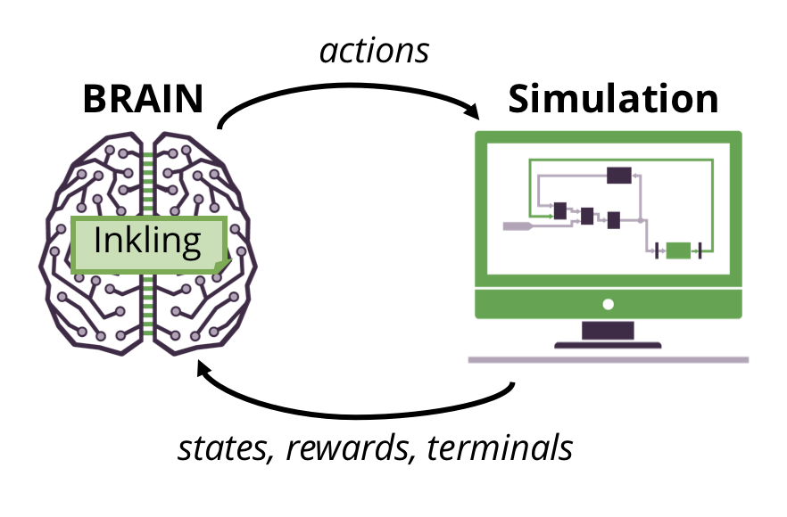
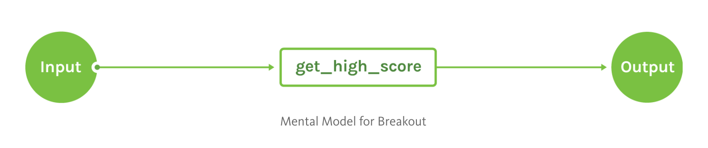

Overview

Welcome to Inkling, Bonsai’s special-purpose programming language for training AI.
Inkling is a declarative, strongly-typed programming language specifically designed for artificial intelligence. It abstracts away the vast world of dynamic AI algorithms that require expertise in machine learning and enables more developers to program AI. An Inkling file contains the concepts – what you want to teach the AI – and the curriculum, – how you want to teach the concepts – necessary to train your BRAIN. Before you read through this section about the Inkling language, you should familiarize yourself with the various components of the Bonsai AI Engine, which you can read about in our Getting Started Guide.
If you’re interesting in finding out more about what’s going on under the hood of the Bonsai AI Engine, check out Understand AI Engine Components.
Inkling: A New Language
What kind of language is Inkling?
Inkling is a special-purpose language for writing AI programs. The language has a blend of declarative and functional styles. We like to describe Inkling as the world’s first machine teaching language.
The version of Inkling described below replaces an earlier version, which is documented in the Inkling v1 Guide
What is Machine Teaching?
Machine teaching is a new programming paradigm. It expresses the solution to a problem in terms of how you teach the computer to find the solution as opposed to how to calculate the solution. Machine teaching focuses on:
- What do you want the computer to know? Machine teaching captures the concepts and their relationship to each other and forms a directed graph of the concepts.
Imagine learning to play baseball. There are many concepts involved. It goes beyond just the rules of the game and includes things like batting stance, bat grip, hand-eye coordination, etc.
- How do you go about teaching those things? Machine teaching focuses on how the problem can be taught, not how it can be calculated.
Imagine teaching children to play baseball. You can’t just explain the whole game to them and expect them to understand how to play. You’d break down learning into pieces and create a series of lessons that would help them learn how to play baseball.
Let’s say, to start, you wanted to teach them the concept of hand-eye coordination. A sequence of lessons would capture this. You might start with a whiffle ball on a tee, progress to a tee that pops the ball up, move to underhand pitches, and then overhand pitches. You could continue to build upon your hand-eye coordination concept with things like curved pitches, different styles of catching, and other exercises. These progressive lessons help teach one concept - hand-eye coordination.
Inkling is a Special-Purpose Language
Inkling is a special-purpose language (sometimes referred to as a domain-specific language), meaning that it is intended for writing programs for a particular domain. It is not designed as a general-purpose language, which allows you to write anything you can imagine. C++, Python, Ruby, and Java are all examples of general-purpose programming languages.
For example:
- Python and Javascript can be programmed in a functional way, but they are not pure functional languages.
- F# is a pure functional programming language.
- R, matlab, Java and prolog are not functional programming languages.
White Space Insensitive
Inkling is insensitive to white space. Internally, we prefer to use four spaces to indent lines. This is a stylistic choice. In this document, any mention of an “indentation” or a line “being indented” refers to using four spaces at the start of a line.
Concept Graphs
Concepts are the ideas that you want to teach your BRAIN. A BRAIN is organized into a directed graph of concepts with information flowing from the input of the graph to the output. A minimal concept graph may contain only a single concept. More complex concept graphs contain additional concepts whose outputs form inputs to yet other concepts. All concepts graphs must designate one concept whose output becomes the output for the entire BRAIN.
For more information about Concepts, refer below to Concepts and the Concept Reference.
Building a Concept Graph
As you think about the problem you’re trying to solve, consider how it may make sense to break up into subconcepts that can be taught independently and in an incremental manner. Start by thinking about the problem and what criteria must be met to solve it. For example:
- Learning to play a game
- Learning to save electricity in your home
- Learning to guide an agent to a specified location
After you’ve determined your success criteria, you want to decide what the AI can do to prove it has successfully learned how to achieve those criteria. In a game, this could be, “I think if the AI can get a high score, it has successfully learned to play the game.” This becomes your output concept, and it also ties into your reward function, which measures how successful the AI is at learning this concept.
The input to the concept graph typically mirrors the observable inputs for your systems. For example, if you are learning to play a game, the input may be the rasterized image of the game board. If you are learning to save electricity in your home, the inputs may consist of the current outside temperature, current inside temperature, the desired temperature, current electrical rate, etc.
The output of the concept graph typically includes one or more actions that can be effected in your system. For a game, the output may consist of the X and Y values of a joystick controller and the state of one or more buttons. If you are learning to save electricity in your home, the output may consist of control signals that turn on the air conditioner or heater.
Multi-Concept Graphs
For more complex problems, it may be beneficial to break down the problem into other concepts. The outputs of these concepts can act as inputs for later concepts. By teaching these earlier concepts independently, it is often possible to speed up the overall training time.
For each concept, you will need to determine what inputs are required and what data is expected to be computed as an output. Once a concept is successfully trained, it acts as a learned function that transforms its inputs into outputs. A concept’s inputs can come from the graph input or from other concepts in the graph.
Your concept graph can be drawn from left to right, starting with the graph input. Your other concepts come next, followed by your output concept, and finally, to the right, is the output. Concepts are trained independently with earlier concepts being trained before later concepts. To visualize this more clearly, see our expanded example below.
Examples
Example: Breakout
graph (input: GameState) {
concept get_high_score(input): PlayerMove {
# Curriculum omitted
}
output get_high_score
}
This program defines a single-concept graph. The name of the concept is get_high_score, and its input is the same as the input to the graph. It outputs a data type called PlayerMove. (More on types and type declarations below.)
The output statement indicates that the get_high_score concept is the output for the entire graph.

Single concept graph for learning Breakout
The input is a snapshot of the game in its current state.
The concept get_high_score, is the output concept. It describes what we want the BRAIN to learn (in this case, to get a high score in the simulated Breakout game). This single-concept graph is sufficient to train a BRAIN to play the game, but training may take a long time.
The output type PlayerMove describes the move that the AI wants to make. It chooses from left, right, or no move. The definition of the GameState and PlayerMove types are not shown.
To learn the get_high_score concept more quickly, additional concepts can be added to the concept graph.
graph (input: GameState) {
concept BallLocation(input): Coordinates {
# Curriculum omitted
}
concept KeepPaddleUnderBall(input, BallLocation): PlayerMove {
# Curriculum omitted
}
concept GetHighScore(input, KeepPaddleUnderBall): PlayerMove {
# Curriculum omitted
}
output GetHighScore
}
In this example, we’ve added two extra concepts that support our output concept and give our BRAIN more information to work with. The concept of ball_location computes the coordinates of the ball, which are provided as inputs to the concept keep_paddle_under_ball, and that concept provides input to get_high_score.
The graph input remains the same as before. The AI has two additional concepts to train. When it is training the ball_location concept, it takes in the input and returns the coordinates of the ball. On the keep_paddle_under_ball concept, it takes in the input and the ball coordinates from ball_location. Then, that concept returns the best move to attempt to keep the paddle underneath the ball. The final concept, get_high_score, takes in the input and the move returned from keep_paddle_under_ball and returns the move that will optimize the high score. Each of these concepts are trained from input to output.
Concepts
A concept in Inkling is an (abstract) idea. In Inkling, the concept defines what you are going to teach the AI and how to teach it. For more information about using the concept keyword, refer to the Concept Reference.
Every Inkling program needs at least one concept, which provides the output to the concept graph. Additional concepts may be defined to assist in teaching the output concept.
Examples
Example: Pac-Man
If you want to teach your AI to play a game, the result of the AI learning this concept should be that it knows how to play the game. For example, consider an Inkling program that teaches an AI to play Pac-Man. The goal of the main concept is to get a high score.
Supporting concepts might include eat_dots, avoid_ghosts, eat_fruit, avoid_blue_ghosts, dot_location, ghost_location, and ghost_color.
Example: Tetris
Consider the game Tetris. As with Pac-Man, we want the AI to get the highest score possible. To assist in teaching the output concept, we can consider various other concepts that may assist the AI. Here’s a short list, but you might be able to think of other facts you’d want to use:
active_tetrimino: the tetrimino (piece) that is active.tetrimino_location: the location of the active tetrimino.tetrimino_speed: how fast the tetrimino is moving.clear_base: fit tetriminos into the base to clear pieces of it.
Any of these could be written into supporting concepts that would give information to the output concept.
Example: Home Automation
Let’s imagine that we want to save energy by turning off the lights in empty rooms. The output concept may be called turn_off_lights_empty_rooms. To support the output concept, we need to think about other concepts that may assist the AI. Here’s a short list, but you might be able to think of other facts that you’d want to use:
light_state: the on/off state of the lights in each room.people_home: The total number of people in the house.person_location: The location of each person/the room each person is in.time_empty: The amount of time a room has been empty.definitely_empty: don’t shut off lights if someone is coming right back.still_in_use: (a variant of the one above) don’t turn off the lights if an empty room might be reoccupied soon.
Any of these could be written into supporting concepts that would give information to the output concept.
Writing Concept Statements
In Inkling, concepts are declared using the concept keyword followed by the concept’s name, input list and output type. For readability, a descriptive name is recommended.
Every learned concept must include a curriculum, which tells the AI engine how to train the concept. These will be covered below.
For more information on the concept statement, see the Concept Reference.
Types
Values in Inkling, including inputs and outputs of concepts, have defined types.
The AI engine uses types to understand the data it is sent and how to represent the prediction it generates. Inkling is a statically-typed language. Errors will be reported if values are not compatible with their expected type.
Inkling supports the following base types:
- number - a scalar numeric value with double floating point precision and range
- structure - a list of fields, each with its own specified type and unique name
- string (future) - a string of zero or more Unicode characters
- array (future) - a fixed-length list of values each with the same type
Type Declarations
A symbolic name can be associated with a type, and the name can be used anywhere a type can be specified.
# Numeric type declaration
type Dimension number
# String type declaration
type PortName string
# Structure type declaration
type Place {
Name: string,
Longitude: number,
Latitude: number
}
# Structure types can refer to other types
type SensorState {
Height: Dimension,
Width: Dimension
}
Type References
In Inkling, type references always follow a colon, which separates the field, variable, function or parameter from its type.
# Graph input is of type GameState, and output is of type Action
graph (input: GameState): Action {
# Graph body omitted
}
Range Constraints
Number types can be constrained using range constraints, which consist of a start and end value and an optional step amount.
# A real (floating-point) value from 0 to 5
type TypeA number<0..5>
# An integer value from 0 to 5, inclusive
type TypeB number<0..5 step 1>
# A number in the set {-1, -0.5, 0, 0.5, 1}
type TypeC number<-1..1 step 0.5>
# Constrained types can be further constrained
type TypeD TypeA<1..2>
# This will generate an error
type TypeE TypeA<1..7>
Enumerated Constraints
Number and string types can be constrained using enumerated constraints, which list the allowed values explicitly. Two forms of enumerated constraints are supported. Ordinal enumerations are assumed to have a meaningful order and must be listed in increasing order. Nominal enumerations have names but no meaninful order.
# Ordinal enumeration
type Angle number<0, 15, 30, 90, 180>
# Nominal enumeration
type Direction number<Left = 0, Right = 1, Straight = 2>
# String ordinal enumeration
type Color string<"Red", "Blue", "Green">
Built-in Numeric Types
Inkling supports built-in names for signed and unsigned integers of various sizes as well as floating point (32 and 64 bit). More details can be found under Inkling Types.
Complex Types
Inkling supports built-in types for complex objects that are commonly used as data inputs. More details can be found under Inkling Types.
using Image
type SensorInput {
ForwardCamera: Image.Gray<200, 200>,
DepthSensor: Image.Gray<100, 50>
}
Curriculum and Lessons
A curriculum in Inkling defines how to teach a concept. Each concept declaration must contain a curriculum. A curriculum also specifies the data source (the simulator) used to train the concept.
A lesson is part of a curriculum. It teaches a specific piece of the concept by specifying training parameters. Lessons enable the AI to learn the concept in stages instead of all at once. Lessons are contained within curriculum statements. If no lessons are specified within a curriculum, a default lesson is assumed.
Each lesson provides an optional simulator configuration. If multiple lessons are specified, they should progress in difficulty with simple configurations followed by increasingly-difficult configurations.
concept Balance
curriculum {
source CartpoleSimulator
lesson Slow {
constraint { MaxSpeed: 10 }
}
lesson Medium {
constraint { MaxSpeed: 20 }
}
lesson Fast {
constraint { MaxSpeed: 30 }
}
}
}
For more information and examples, refer to the Curriculum Reference.
Defining Lessons
Simulator Configuration Constraints
Each lesson may specify a constraint for the simulator’s configuration. Earlier lessons must provide more restrictive constraints, while later lessons loosen the constraints. This allows the AI training to learn a simpler form of the concept before learning a more complex form.
The constraint keyword must be followed by a type that constrains the simulator’s declared configuration type. For more information and examples, refer to the Lesson Reference.
Reward
The reward is a function that returns a numeric value indicating how well the AI is doing.
This idea may be easier to understand with a few examples:
In our Breakout example, our concept was GetHighScore. The score is how we are measuring how well the AI is doing at learning that concept.
If we are teaching the AI Pac-Man and we are training the concept of avoid-non-blue-ghosts, we may measure how well the AI is learning this concept by measuring the amount of time the AI manages to avoid non-blue ghosts. Our reward function uses time as the reward.
Defining Rewards
There are several factors you can use to determine what your reward should be. A good reward function should reward the AI more often and be proportional to the quality of the behavior.
Sparsity of Rewards
The frequency of feedback affects the speed of training. Ideally, the time between the AI’s decision making and the reward for the behavior should be short. For example, if you’re teaching an AI to play Pac-Man, you want to choose a reward like score instead of a reward like beat level. In Pac-Man, your score changes often, typically many times during a level, but your level can change only 256 times, and only after many actions. Your AI would need to beat an entire level to be rewarded, which is difficult to do without getting intermediate feedback about which actions along the way were beneficial.
Proportional Feedback
The reward should be in proportion to the quality or correctness of the behavior. When you are implementing your reward function, you need to consider that the AI will learn exactly what you ask it to learn. This can result in learning what you specified but not necessarily what you wanted. For example, if you ask an AI to play Pong (controlling both agents), and your reward function is based on game time, the AI may learn that to get the longest time played, the paddle should remain in the same place. The ball will bounce back and forth between the two unmoving paddles. The AI learned exactly what you told it to learn – how to maximize the amount of time, but it didn’t learn how to play the game.
Next Steps
Now that you’ve reviewed this guide, you can:
Review Advanced Platform Techniques (YouTube link) video to help you build and run complex Inkling on the Platform.
And we have these other resources that will enable you to maximize your AI development experience: